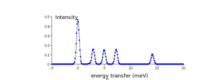
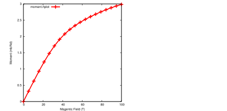

Next: Magnetic exchange Up: Summary Previous: Summary Contents Index
When an external magnetic field is applied the term of the form
Or the term of the form
 (7)
(7)
 , respectively.
, respectively.
Note that by "external magnetic field " we refer to the
magnetic field in the sample, which is the applied field (e. g. generated by a
coil) diminished by the demagnetizing tensor
times the magnetisation  of the sample, i. e.
,
e. g. for a spherical sample
 ,
where
,
where  is the identity matrix. The unit of
is usually chosen to be Tesla, which actually refers to the quantity
(in SI units).
is the identity matrix. The unit of
is usually chosen to be Tesla, which actually refers to the quantity
(in SI units).